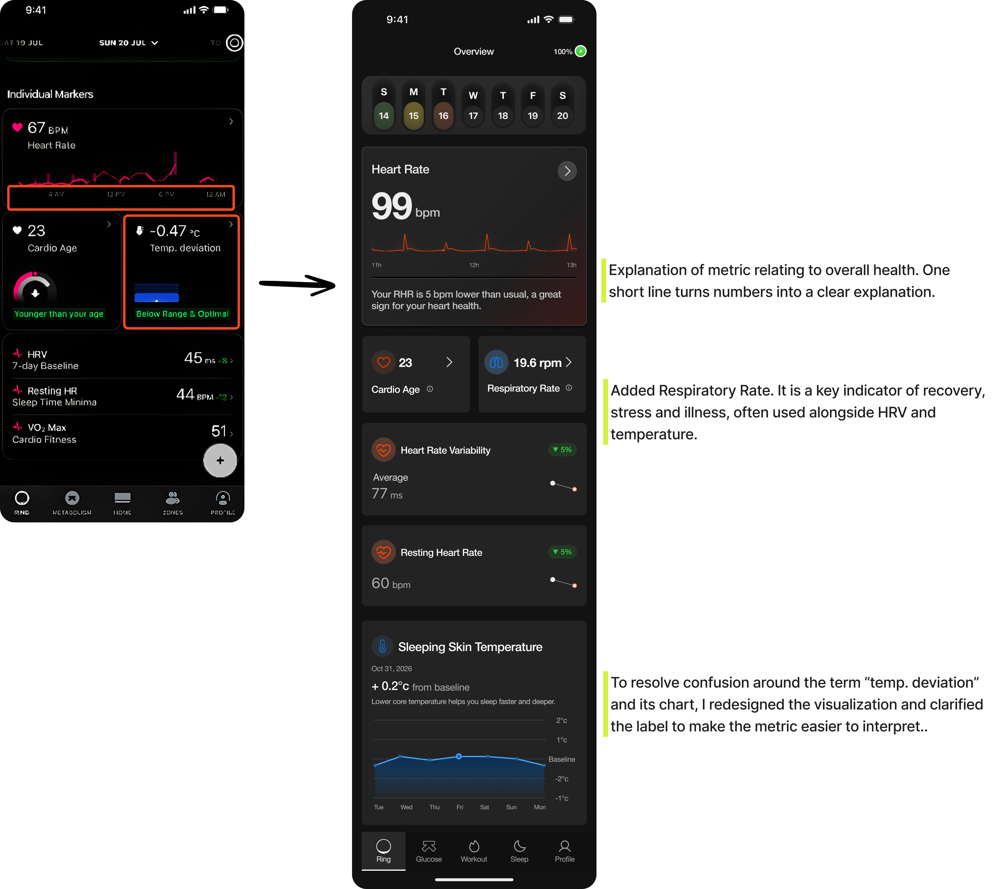
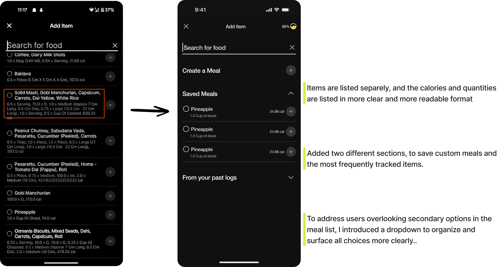
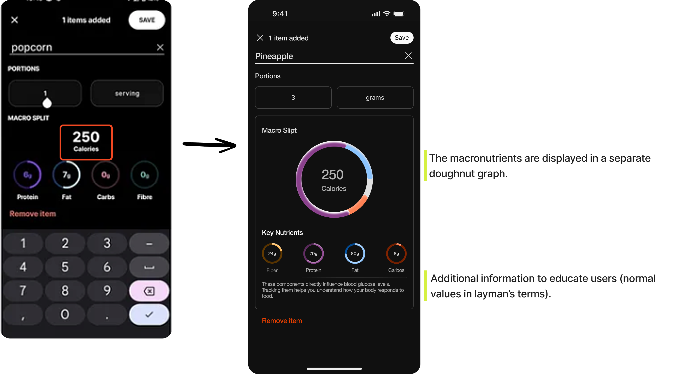
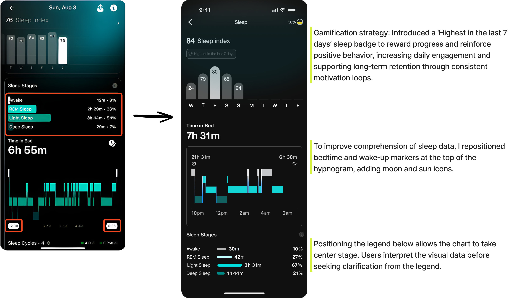

Research
Competitive Analysis
I conducted a competitive analysis of key competitors in the health and wellness app space, categorizing them into four distinct groups. This process helped identify their strengths and uncover areas for improvement. The goal was to understand what competitors excelled at and which features could be enhanced or reimagined within the Ultrahuman experience.
Key findings:
The analysis revealed that while glucose tracking stood out as a differentiating feature, meal logging appeared to be less emphasized in terms of visibility, integration, or design priority. Additionally, the analysis revealed a strong need to improve how data is interpreted and to enhance the clarity and usability of chart layouts.
Customer Journey Map
This journey maps how users input and monitor data within the Ultrahuman app, highlighting their actions, difficulties, and pain points, and then correlating these issues with the solutions proposed in earlier stages.
Takeaways
Based on the insights gathered, I designed a more intuitive user journey by prioritizing the moments with the greatest impact on the overall experience. The goal was to make the flow clearer, more direct, and efficient by removing unnecessary steps and simplifying interactions.
Design Decisions
Each update addresses specific usability challenges such as vague glucose visualization, compressed meal lists, and unclear sleep data presentation by refining interface elements, optimizing visual hierarchy, and adding intuitive cues. The following sections describe the reasoning and impact behind each redesign, highlighting improvements that make health tracking more accessible and actionable.
Redesigning Individual Markers
Problem: On the individual markers screen of the Ultrahuman app, users faced a cluttered layout, confusing terminology, and a lack of clear explanations for key metrics. This led to difficulty interpreting data and reduced confidence in the insights provided.
Solution: I added concise explanations for each metric, reorganized the layout to improve spacing, and refined how certain metrics were displayed. These changes made the screen cleaner, easier to understand, and more supportive of user trust in the data.

Streamlining Meal Tracking for Better Readability and Smarter Recall
Problem: The list of past meals appears overly compressed, with too much information packed into a limited space, making it hard to read and match quantities to the correct items. Additionally, the tracked items seem to be displayed in no particular order, leaving users unsure whether they are seeing the most frequent or most recent entries first.
Solution: In the updated design, meal items are now displayed individually, with calories and quantities presented in a clearer, more readable format. A new section for saving custom meals has been added at the top for quicker access. These saved meals appear first, followed by the most frequently tracked items. Each saved meal also shows the total calorie count for every food item it includes.

Visualizing Macronutrients for Instant Nutritional Understanding
Problem: The macronutrient doughnut graph is difficult to interpret.
Solution: The macronutrients are displayed in a separate doughnut graph, which makes it clear to understand how the total number of calories in the item is split between each macronutrient.

Making Sleep Data Intuitive Through Smarter Charts and Visual Hierarchy
Problem: The sleep stages section lacks visual clarity, making it difficult for users to interpret their sleep patterns. Both the hypnogram and sleep score charts have room for improvement in terms of readability and data storytelling.
Solution: Enhanced the visual hierarchy and labeling within the sleep stages section, redesign the hypnogram to better differentiate bed time and wake up time, and refine the sleep score chart with clearer indicators and contextual cues to help users quickly grasp their sleep quality.
